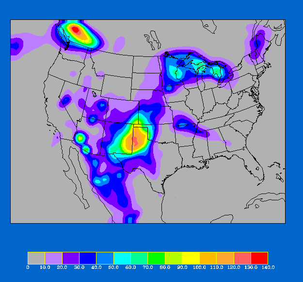

{kind=link}
{kind=link}


1 - HOW TO GET THE BETATEST DATASET
To access the betatest dataset:
README (contains information similar to what is in this document)
tarCODE (tar file contain code to read the data files,
also some interpolation routines)
Note:
and one of the following:
tarGLOBAL (contains data on a global 2.5 degree grid (i))
tarREGDOM (contains data on PIRCS 0.5 degree grid (ii))
tarPSTDOM (contains data on PIRCS polar stereographic grid (iii))
(depending on which set of LBC's are appropriate for your model)
Users of the PIRCS Beta-Test dataset should be
aware that
the provided variables are not stagggered, i.e., they
are all
at the same location. Because participant
models may use staggered grids horizontally
the width of the forcing zone will differ between
models.
For example, for the Arakawa B grid, the width for T
and q will
be 8 grid spacings, but 9 for U and V.
It is up to the participant to determine
which
PIRCS dataset suits their needs best.
It is recommended that participants use a bilinear
interpolation method
to interpolate the PIRCS grid-point data to their own
model's grid.
A bilinear interpolation subroutine based on
bint.f (described in
Manning and Haagenson, 1992) is part of program
indat_gen.f included
in the distributed dataset.
Various programs that read the files containing the
data are available.
Hopefully these programs are designed
so that they can be easily adapted by the participants
in their efforts
to convert the LBC's to their specific model
configuration.
These codes are in the file tarCODE in the directory /pub/PIRCS/BETA.RELEASE at the FTP site.
A listing and brief description of each program is included in the README
file of the directory READ.CODE (the directrory which the files are in,
when tarCODE is untarred).
The data are packed in integer format, and are in
slices ('horizontal') of constant pressure.
(25 mb being first, 1050 being last.) The data are
ordered as follows: surface pressure (Variable
code 001; units Pa), temperature (011; K), specific
humidity (051; kg/kg), u component of the
wind (033; m/s), and the v component of the wind (034;
m/s). This code "unpacks" the data, as they are
stored in a positive integer format; i.e., for each
field (horizontal slice) a maximum value
is determined, and this (and every other data point) is
multiplied by some scale factor to ensure
that the desired number of significant digits are to
the left of the decimal point. The
original data are extracted by subtracting the stored
data from the base value
and then dividing by
the scale factor. The
space requirements are minimized through the storage of
data as positive integers. To further
minimize the space requirements, data were compacted
using the standard UNIX "compress" (a
modified Lempel-Ziv algorithm popularized in Welch,
1984) command. While this choice of
packing procedure is not a meteorological "standard"
like GRIB or BUFR, we think that fewer
problems will be experienced in the short term.
For each 'horizontal' slice the data are ordered as
follows, as you look at it on the screen
(Note, this applies for the ordering of the forcing
data as well.)
SW Corner (1,1) .........................(XMAX,1) SE Corner
Note, in the read program, the I index is E-W, and the
J index is N-S.
(1,2) .........................(XMAX,2)
...........(I,J)...............
...............................
NW corner (1,YMAX).......................(XMAX,YMAX) NE Corner
3 - ISU BETATEST - SOME RESULTS
We ran the beta test at ISU using REGCM2 to produce
the output appearing
here.
( Figure
1.1(0.00833 MB) shows the time series of
the domain averaged temperature at a near-surface level
(sigma=0.9) for the BETAtest period as simulated by
REGCM2, and
( Figure
1.2(0.00833 MB) shows the time series of
the domain averaged wind speed at the same level. Figure 1.3
(below) shows the simulated
precipitation for the period.

It has been our experience that a 5 day integration
of REGCM2
(see Giorgi, et al., 1994) configured
for the PIRCS domain takes about
17 hours of cpu time on a DEC AXP 3000 workstation with
32 MB of assigned memory, and 32 hours with 10 MB
assigned.
The variables provided are surface pressure, T,
q, u, & v. They are provided
every 25 mb from 25 mb to 1050 mb. Also provided are
fields of the NCEP analysis topography for all
domains and topographic datasets for the limited
domains (ii) and (iii).
The latter were derived from a 30
minute dataset, and they have more detail than the
analysis topography.
Land-use datasets are also
provided for each of the limited domains, as well as
global SST's, soil moisture for the
limited domains, and the Great Lakes surface
temperatures.
Fig. 1.3 - Total rainfall (mm) for the 5 day period
from 00 UTC July 1 to
00 UTC July 6, 1988 as simulated by REGCM2 using the
PIRCS BETAtest
dataset.
REFERENCES
Manning, K. W., and P. L. Haagenson, 1992: Data ingest and objective analysis for the PSU/NCAR modeling system: Programs DATAGRID and RAWINS. NCAR Technical note, NCAR/TN- 376+IA, 209 pp.
| Copyright/Trademark Legal Notice |